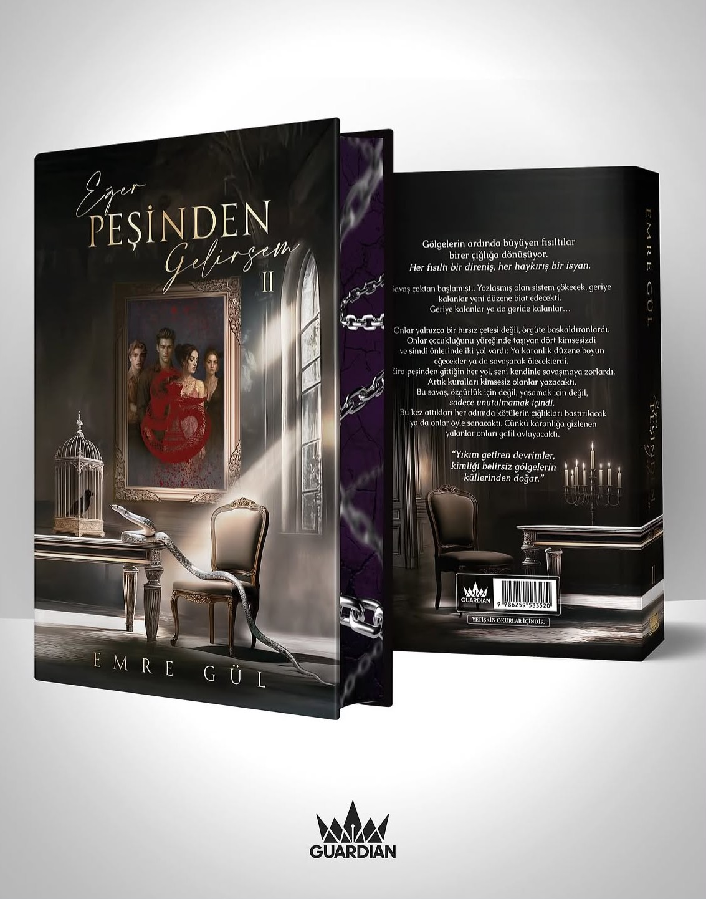

Gölgelerin ardında büyüyen fısıltılar birer çığlığa dönüşüyor.
Her fısıltı bir direniş, her haykırış bir isyan.
Savaş çoktan başlamıştı. Yozlaşmış olan sistem çökecek, geriye kalanlar yeni düzene biat edecekti.
Geriye kalanlar ya da geride kalanlar…
Onlar yalnızca bir hırsız çetesi değil, örgüte başkaldıranlardı. Onlar çocukluğunu yüreğinde taşıyan dört
kimsesizdi ve şimdi önlerinde iki yol vardı: Ya karanlık düzene boyun eğecekler ya da savaşarak öleceklerdi.
Zira peşinden gittiğin her yol, seni kendinle savaşmaya zorlardı. Artık kuralları kimsesiz olanlar yazacaktı.
Bu savaş, özgürlük için değil, yaşamak için değil, sadece unutulmamak içindi.
Bu kez attıkları her adımda kötülerin çığlıkları bastırılacak ya da onlar öyle sanacaktı. Çünkü karanlığa
gizlenen yalanlar onları gafil avlayacaktı.
“Yıkım getiren devrimler, kimliği belirsiz gölgelerin küllerinden doğar.”
Not: Yetişkin okurlar içindir.